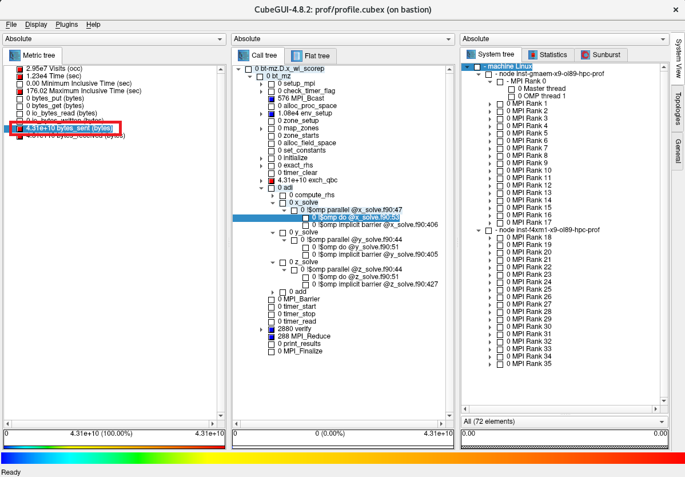
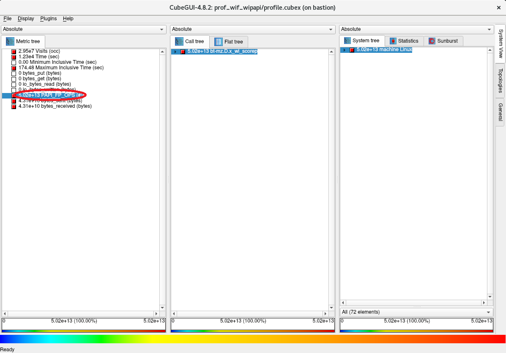
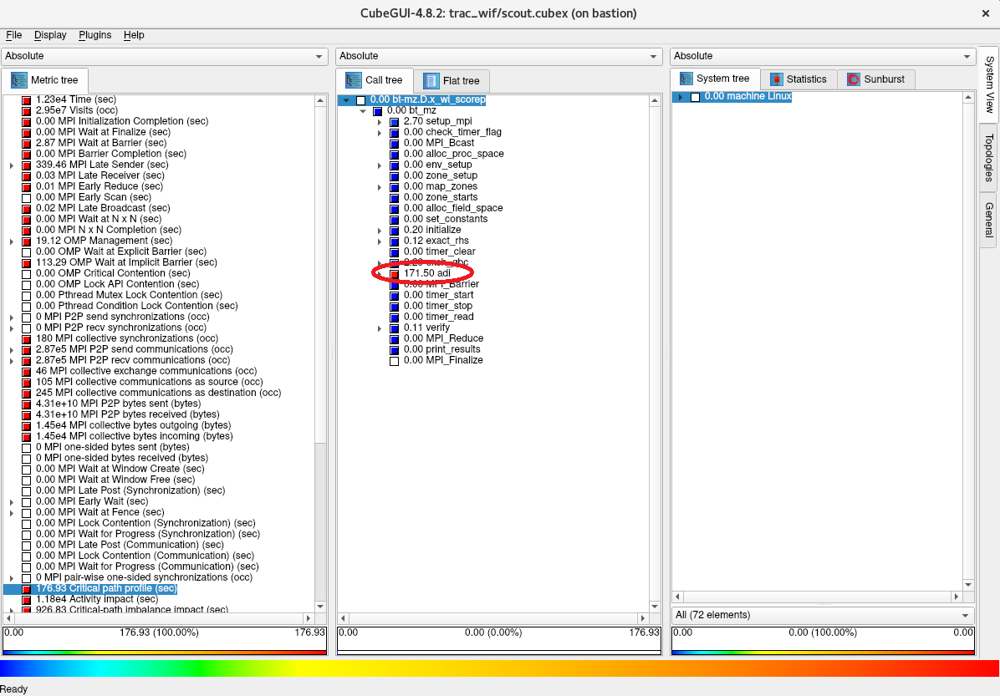

0. 概要
Score-P は、HPCに於ける高並列アプリケーションをスケーラブルで簡易にプロファイリング（※1）することを目的に開発されたオープンソースのプロファイリングツールで、以下の代表的な並列プログラミングモデルに対応しています。
- スレッド並列
- OpenMP
- Pthreads
- プロセス並列
- MPI
- SHMEM
- GPU並列
- CUDA
- OpenCL
- OpenACC
また Score-P は、並列アプリケーションの評価指標を統計的に扱うプロファイリング手法（※1）と、これらの評価指標をタイムスタンプと共に扱うトレーシング手法（※1）の何れにも対応しており、解析用途に合わせたプロファイリングが可能です。
※1）本プロファイリング関連Tipsでは、性能向上を目的とした並列アプリケーションの性能解析プロセス全般を プロファイリング と呼称し、この中で評価指標を統計的に扱う プロファイリング の1つの方法を プロファイリング手法 と呼称します。これに対し、評価指標をタイムスタンプと共に扱う プロファイリング の1つの方法を トレーシング手法 と呼称します。
また Score-P は、 PAPI が取得するハードウェアカウンタ等の情報を取り込むことで、以下のように浮動小数点演算数等の情報をサブルーチンや関数単位で集計することが可能です。

Scalasca は、 Score-P が出力するトレーシング手法のデータをタイムスタンプ情報を元に解析する機能を持ち、並列アプリケーションのクリティカルパスの特定やプロセス間・スレッド間で発生する待ち時間等、プロファイリング手法では得られない情報を提供します。
また Scalasca は、 Score-P のフロントエンドとしても機能し、殆どの Score-P の操作を Scalasca から実施することが可能です。
CubeGUI は、Score-P が出力するプロファイリング手法のデータを読み込むことで、プロファイリング対象の並列アプリケーションを以下の3評価軸で表示し、
- 評価指標
- CPU時間
- MPI通信データ量
- I/Oデータ量
- コールツリー
- サブルーチン・関数
- MPI関数
- OpenMPループ
- システム位置
- ノード
- MPIプロセス
- OpneMPスレッド
以下のようにGUIで視覚的に表示することで、

以下の観点で並列アプリケーションをプロファイリングすることが可能です。
- MPI通信によるスケーラビリティへの影響
- MPI通信が全体に対してどの程度の時間を占めているか
- 最も通信データ量の多いMPI関数は何か
- 各MPIプロセスのMPI通信データ量に偏りがあるか
- ロードバランス不均衡によるスケーラビリティへの影響
- MPIで並列化されたループの実行に各計算ノードがどの程度時間を要しているか
- MPIで並列化されたループの実行に各MPIプロセスがどの程度時間を要しているか
- OpenMPで並列化されたループの実行に各OpenMPスレッドがどの程度時間を要しているか
- ホットスポットの特定
- 最も時間を要しているサブルーチンはどこか
- 最もMPI通信データ量の多いMPI関数はどのサブルーチンから呼ばれているか
- I/Oによるスケーラビリティへの影響
- I/Oがどの程度の時間を要しているか
また CubeGUI は、 Scalasca がトレーシング手法のデータを解析した結果を読み込んで、以下のようにGUIで確認することが可能です。
以上の各ツールの関係は、 Score-Pのウェブサイト に記載のある以下のアーキテクチャ図が参考になります。

本プロファイリング関連Tipsは、 Score-P 、 Scalasca 、及び CubeGUI でプロファイリング手法とトレーシング手法を使用する並列アプリケーションのプロファイリングを以下に沿って解説します。
なおプロファイリング対象の並列アプリケーションは、 NAS Parallel Benchmarks を使用します。
- HPCクラスタ構築
- 前提条件ソフトウェアインストール・セットアップ
- Score-P インストール・セットアップ
- Scalasca インストール・セットアップ
- CubeGUI インストール・セットアップ
- プロファイリング手法データの取得
- 浮動小数点演算数を含まないプロファイリング手法データの確認
- 浮動小数点演算数を含むプロファイリング手法データの確認
- トレーシング手法データの取得・解析
- トレーシング手法データ解析結果の確認
各ソフトウェアは、以下のバージョンを前提とします。
- 計算ノードOS ： Oracle Linux 8.9ベースのHPC クラスタネットワーキングイメージ （※2）
- BastionノードOS ： Oracle Linux 8.9
- OpenMPI ：5.0.3
- PAPI ：7.1.0
- Score-P ：8.4
- Scalasca ：2.6.1
- CubeGUI ：4.8.2
※2）OCI HPCテクニカルTips集 の クラスタネットワーキングイメージの選び方 の 1. クラスタネットワーキングイメージ一覧 のイメージ No.1 です。
本プロファイリングTipsで使用するHPCクラスタは、 クラスタ・ネットワーク に接続する BM.Optimized3.36 2ノードをプロファイリング対象の並列アプリケーションを Score-P や Scalasca と共に実行する計算ノードとし、Bastionノード1ノードを計算ノードで採取したプロファイリングのデータを CubeGUI で解析するフロントエンド用途のノードとして構築します。
ここで CubeGUI がX11ベースのアプリケーションのため、この操作画面を表示するXサーバの稼働する CubeGUI 操作端末を用意します。

1. HPCクラスタ構築
本章は、本プロファイリングTipsで使用するHPCクラスタを構築します。
この構築手順は、 OCI HPCチュートリアル集 の HPCクラスタを構築する(基礎インフラ手動構築編) の手順に従い実施します。
この際、計算ノードとBastionノードを以下のように構成します。
- 計算ノード ブート・ボリューム サイズ ： 100GB以上（インストールするソフトウェアの容量確保のため）
- 計算ノードSMT : 無効（※3）
- Bastionノード ブート・ボリューム サイズ ： 200GB以上（インストールするソフトウェアの容量確保のため）
- Bastionノードコア数 ： 8コア（ CubeGUI のコンパイル高速化のため）
※3）SMTを無効化する方法は、 OCI HPCパフォーマンス関連情報 の パフォーマンスに関連するベアメタルインスタンスのBIOS設定方法 を参照してください。
2. 前提条件ソフトウェアインストール・セットアップ
本章は、本プロファイリングTipsで使用する Score-P の前提条件ソフトウェアとして、計算ノードに OpenMPI と PAPI をインストール・セットアップします。
この方法は、以下コンテンツのインストール・セットアップの章を参考に、この順番で実行します。
なお本章の作業は、全ての計算ノードで実施します。
3. Score-Pインストール・セットアップ
本章は、 Score-P を計算ノードにインストールし、利用に必要な環境設定を行います。
なお本章の作業は、全ての計算ノードに実施します。
-
以下コマンドをopcユーザで実行し、 Score-P の前提条件ソフトウェアを提供するyumレポジトリを追加します。
$ sudo yum-config-manager --enable ol8_codeready_builder ol8_developer_EPELなお、上記コマンド実行時に以下のメッセージが出力される場合、
This system is receiving updates from OSMS server. Error: No matching repo to modify: ol8_developer_EPEL.OSのパッケージ管理が OS管理サービス で行われているため、以下コマンドをopcユーザで実行し、これを解除した後に再度yumレポジトリを追加します。
ここで実施する OS管理サービス の解除は、10分程度の時間が経過すると自動的に OS管理サービス 管理に戻ります。$ sudo osms unregister $ sudo yum-config-manager --enable ol8_codeready_builder ol8_developer_EPEL -
以下コマンドをopcユーザで実行し、 Score-P の前提条件ソフトウェアをインストールします。
$ sudo dnf install -y binutils-devel libunwind libunwind-devel gcc-plugin-devel llvm-devel clang-devel -
以下コマンドをopcユーザで実行し、 Score-P をインストールします。
これにより、 Score-P が /opt/scorep にインストールされます。$ cd ~; wget https://perftools.pages.jsc.fz-juelich.de/cicd/scorep/tags/scorep-8.4/scorep-8.4.tar.gz $ tar -xvf ./scorep-8.4.tar.gz $ cd scorep-8.4; ./configure $ make -j 36 && sudo make install -
以下コマンドをopcユーザで実行し、 Score-P 実行に必要な環境変数を設定します。
$ echo "export PATH=\$PATH:/opt/scorep/bin" | tee -a ~/.bashrc $ source ~/.bashrc
4. Scalascaインストール・セットアップ
本章は、 Scalasca を計算ノードにインストールし、利用に必要な環境設定を行います。
なお本章の作業は、全ての計算ノードに実施します。
-
以下コマンドをopcユーザで実行し、 Scalasca をインストールします。
これにより、 Scalasca が /opt/scalasca にインストールされます。$ cd ~; wget https://apps.fz-juelich.de/scalasca/releases/scalasca/2.6/dist/scalasca-2.6.1.tar.gz $ tar -xvf ./scalasca-2.6.1.tar.gz $ cd scalasca-2.6.1; ./configure $ make -j 36 && sudo make install -
以下コマンドをopcユーザで実行し、 Scalasca 実行に必要な環境変数を設定します。
$ echo "export PATH=\$PATH:/opt/scalasca/bin" | tee -a ~/.bashrc $ source ~/.bashrc -
以下コマンドをopcユーザで実行した結果となるよう、SSH関連設定ファイルを修正・作成します。
これは、 Score-P と Scalasca 実行に必要な環境変数をSSH経由でリモートノードに引き渡すために必要です。
なおこの手順と次の手順は、プロファイリングジョブをジョブスケジューラを介して実行することでリモートノードへの環境変数の引き渡しが行われる場合は、実施する必要がありません。$ sudo diff /etc/ssh/sshd_config_org /etc/ssh/sshd_config 117c117 < #PermitUserEnvironment no --- > PermitUserEnvironment yes 135a136 > AcceptEnv SCOREP_* SCAN_* $ cat ~/.ssh/config Host * SendEnv SCOREP_* SCAN_* $ -
以下コマンドをopcユーザで実行し、先の sshd_config ファイルの修正を反映します。
$ sudo systemctl restart sshd
5. CubeGUIインストール・セットアップ
本章は、 CubeGUI をBastionノードにインストールし、利用に必要な環境設定を行います。
-
以下コマンドをopcユーザで実行し、 CubeGUI の前提条件ソフトウェアである Qt の前提条件ソフトウェアを提供するyumレポジトリを追加します。
$ sudo yum-config-manager --enable ol8_codeready_builder ol8_developer_EPELなお、上記コマンド実行時に以下のメッセージが出力される場合、
This system is receiving updates from OSMS server. Error: No matching repo to modify: ol8_developer_EPEL.OSのパッケージ管理が OS管理サービス で行われているため、以下コマンドをopcユーザで実行し、これを解除した後に再度yumレポジトリを追加します。
ここで実施する OS管理サービス の解除は、10分程度の時間が経過すると自動的に OS管理サービス 管理に戻ります。$ sudo osms unregister $ sudo yum-config-manager --enable ol8_codeready_builder ol8_developer_EPEL -
以下コマンドをopcユーザで実行し、 CubeGUI の前提条件ソフトウェアである Qt の前提条件ソフトウェアをインストールします。
$ sudo dnf install -y cmake mesa-libGL mesa-libGL-devel mesa-dri-drivers git xauth xcb-proto xcb-util-devel xcb-util-wm xcb-util-wm-devel xcb-util-cursor xcb-util-cursor-devel libXrender-devel xcb-util-keysyms xcb-util-keysyms-devel libxkbcommon-devel libxkbcommon-x11 libxkbcommon-x11-devel fontconfig-devel freetype-devel libXext-devel libSM-devel libICE-devel -
以下コマンドをopcユーザで実行し、 CubeGUI の前提条件ソフトウェアである Qt をインストールします。
これにより、 Qt が /usr/local/Qt-5.15.13 にインストールされます。
なお、makeコマンドの並列数はBastionノードのコア数に合わせて調整します。
また本手順は、8コアのVMインスタンスで30分程度を要します。$ cd ~; git clone https://code.qt.io/qt/qt5.git $ cd qt5; git checkout 5.15 $ perl init-repository $ ./configure -opensource -confirm-license -nomake examples -nomake tests $ make -j 16 && sudo make install -
以下コマンドをopcユーザで実行し、 CubeGUI の前提条件ソフトウェアである CubeLib をインストールします。
$ cd ~; wget https://apps.fz-juelich.de/scalasca/releases/cube/4.8/dist/cubelib-4.8.2.tar.gz $ tar -xvf ./cubelib-4.8.2.tar.gz $ cd cubelib-4.8.2; ./configure $ make -j 16 && sudo make install -
以下コマンドをopcユーザで実行し、 CubeGUI をインストールします。
これにより、 CubeGUI が /opt/cubegui にインストールされます。
なお、makeコマンドの並列数はBastionノードのコア数に合わせて調整します。$ cd ~; wget https://apps.fz-juelich.de/scalasca/releases/cube/4.8/dist/cubegui-4.8.2.tar.gz $ tar -xvf ./cubegui-4.8.2.tar.gz $ cd cubegui-4.8.2; ./configure --with-qt=/usr/local/Qt-5.15.13/bin --with-cubelib=/opt/cubelib/bin $ make -j 16 && sudo make install -
以下コマンドをopcユーザで実行し、 CubeGUI 実行に必要な環境変数を設定します。
$ echo "export PATH=\$PATH:/usr/local/Qt-5.15.13/bin:/opt/cubegui/bin" | tee -a ~/.bashrc $ source ~/.bashrc -
Xサーバの稼働する CubeGUI 操作端末から以下コマンドを実行し、Xフォワードを有効にしてBastionノードにログインします。
$ ssh -X bastion_IP Activate the web console with: systemctl enable --now cockpit.socket Last login: Tue Apr 23 10:35:11 2024 from x.y.z.w /usr/bin/xauth: file /home/opc/.Xauthority does not exist $ printenv DISPLAY localhost:10.0 $ -
以下コマンドをopcユーザで実行し、
$ cube以下のように CubeGUI のスタート画面が起動することを確認します。

6. プロファイリング手法データの取得
6-0. 概要
本章は、NAS Parallel Benchmarks をプロファイリング対象とし、 Scalasca から起動する Score-P でプロファイリング手法によるプロファイリングを実施します。
ここでは、ノードあたり36コアを搭載する BM.Optimized3.36 を2ノード使用することから、36 MPIプロセス・2 OpenMPスレッドの組み合わせを使用します。
この際、プロファイリングによるオーバーヘッドを考慮した精度の良いプロファイリングを実施するため、以下の手順で実施します。
- NAS Parallel Benchmarks バイナリの作成
- プロファイリングを実施しない場合の実行時間を計測
- プロファイリングを実施した場合の実行時間を計測
- 両者に隔たりがある場合プロファイリング対象を限定するフィルタを作成
- フィルタを適用してプロファイリングを実施した場合の実行時間を計測
- 先の実行時間の隔たりが解消したことを確認
6-1. プロファイリング手法データの取得手順
本手順は、計算ノードのうちの1ノードで実施します。
以下コマンドをopcユーザで実行し、プロファイリングを実施しない NAS Parallel Benchmarks のバイナリ（bt-mz.D.x_wo_scorep）とプロファイリングを実施する NAS Parallel Benchmarks のバイナリ（bt-mz.D.x_wi_scorep）を作成します。
$ cd ~; wget https://www.nas.nasa.gov/assets/npb/NPB3.4.2-MZ.tar.gz
$ tar -xvf ./NPB3.4.2-MZ.tar.gz
$ cd NPB3.4.2-MZ/NPB3.4-MZ-MPI
$ cp config/make.def.template config/make.def
$ make bt-mz CLASS=D
$ mv bin/bt-mz.D.x bin/bt-mz.D.x_wo_scorep
$ sed -i 's/^FC = mpif90/FC = scorep-mpif90/g' config/make.def
$ diff config/make.def.template config/make.def
32c32
< FC = mpif90
---
> FC = scorep-mpif90
$ make clean
$ make bt-mz CLASS=D
$ mv bin/bt-mz.D.x bin/bt-mz.D.x_wi_scorep
次に、以下コマンドをopcユーザで実行し、プロファイリングを実施しない場合の実行時間を計測します。
$ mpirun -n 36 -N 18 -machinefile ~/hostlist.txt -mca coll_hcoll_enable 0 -x UCX_NET_DEVICES=mlx5_2:1 -x OMP_NUM_THREADS=2 -bind-to none ./bin/bt-mz.D.x_wo_scorep | grep "Time in seconds"
Time in seconds = 168.84
$
次に、以下コマンドをopcユーザで実行し、プロファイリングを実施した場合の実行時間を計測します。
この実行により、カレントディレクトリにディレクトリ scorep_bt-mz_18p36x2_sum が作成され、ここに取得したプロファイリングデータが格納されます。
$ scalasca -analyze mpirun -n 36 -N 18 -machinefile ~/hostlist.txt "-mca coll_hcoll_enable 0" "-x UCX_NET_DEVICES=mlx5_2:1" "-x OMP_NUM_THREADS=2" "-bind-to none" ./bin/bt-mz.D.x_wi_scorep 2>&1 | grep "Time in seconds"
Time in seconds = 332.30
$
次に、両者の差に2倍近い隔たりがあるため、以下のコマンドをopcユーザで実行し、プロファイリングのオーバーヘッドの原因を調査します。
$ scalasca -examine -s scorep_bt-mz_18p36x2_sum
INFO: Post-processing runtime summarization report (profile.cubex)...
/opt/scorep/bin/scorep-score -r ./scorep_bt-mz_18p36x2_sum/profile.cubex > ./scorep_bt-mz_18p36x2_sum/scorep.score
INFO: Score report written to ./scorep_bt-mz_18p36x2_sum/scorep.score
$ head -n 35 scorep_bt-mz_18p36x2_sum/scorep.score
Estimated aggregate size of event trace: 3329GB
Estimated requirements for largest trace buffer (max_buf): 94GB
Estimated memory requirements (SCOREP_TOTAL_MEMORY): 94GB
(warning: The memory requirements cannot be satisfied by Score-P to avoid
intermediate flushes when tracing. Set SCOREP_TOTAL_MEMORY=4G to get the
maximum supported memory or reduce requirements using USR regions filters.)
flt type max_buf[B] visits time[s] time[%] time/visit[us] region
ALL 99,883,282,963 137,448,437,951 23498.25 100.0 0.17 ALL
USR 99,849,533,524 137,419,676,377 11594.16 49.3 0.08 USR
OMP 29,449,094 24,287,232 11474.83 48.8 472.46 OMP
COM 2,660,710 3,613,660 10.59 0.0 2.93 COM
MPI 1,793,206 860,646 418.66 1.8 486.45 MPI
SCOREP 41 36 0.00 0.0 18.57 SCOREP
USR 32,473,108,434 44,677,967,872 5741.65 24.4 0.13 binvcrhs
USR 32,473,108,434 44,677,967,872 3579.29 15.2 0.08 matmul_sub
USR 32,473,108,434 44,677,967,872 2016.34 8.6 0.05 matvec_sub
USR 858,664,976 1,152,495,616 134.84 0.6 0.12 lhsinit
USR 858,664,976 1,152,495,616 76.55 0.3 0.07 binvrhs
USR 783,427,736 1,080,078,336 45.42 0.2 0.04 exact_solution
OMP 2,533,092 1,028,096 0.10 0.0 0.10 !$omp parallel @exch_qbc.f90:206
OMP 2,533,092 1,028,096 0.10 0.0 0.10 !$omp parallel @exch_qbc.f90:217
OMP 2,533,092 1,028,096 0.11 0.0 0.10 !$omp parallel @exch_qbc.f90:245
OMP 2,533,092 1,028,096 0.11 0.0 0.10 !$omp parallel @exch_qbc.f90:256
OMP 1,271,592 516,096 0.77 0.0 1.50 !$omp parallel @rhs.f90:29
OMP 1,266,546 514,048 0.13 0.0 0.25 !$omp parallel @add.f90:23
OMP 1,266,546 514,048 0.29 0.0 0.56 !$omp parallel @z_solve.f90:44
OMP 1,266,546 514,048 0.28 0.0 0.54 !$omp parallel @y_solve.f90:44
OMP 1,266,546 514,048 0.24 0.0 0.47 !$omp parallel @x_solve.f90:47
MPI 781,865 286,642 0.41 0.0 1.43 MPI_Irecv
MPI 781,865 286,642 0.86 0.0 3.02 MPI_Isend
COM 757,016 1,028,096 2.13 0.0 2.07 copy_x_face
COM 757,016 1,028,096 1.95 0.0 1.90 copy_y_face
$
この出力から、呼び出された回数を示す visits 列の値が大きい region 列を特定し、これに従いプロファイリング対象からこれらの region を除外する以下のフィルタを作成します。
$ cat ./scorep.filt
SCOREP_REGION_NAMES_BEGIN
EXCLUDE
binvcrhs
matmul_sub
matvec_sub
lhsinit
binvrhs
exact_solution
SCOREP_REGION_NAMES_END
$
次に、以下コマンドをopcユーザで実行し、先のプロファイリングデータを格納するディレクトリを次の実行に備えて別名に変更し、フィルタを適用してプロファイリングを実施した場合の実行時間を計測します。
$ mv scorep_bt-mz_18p36x2_sum prof_wof_wopapi
$ scalasca -analyze -f ./scorep.filt mpirun -n 36 -N 18 -machinefile ~/hostlist.txt "-mca coll_hcoll_enable 0" "-x UCX_NET_DEVICES=mlx5_2:1" "-x OMP_NUM_THREADS=2" "-bind-to none" ./bin/bt-mz.D.x_wi_scorep 2>&1 | grep "Time in seconds"
Time in seconds = 174.12
$
次に、 手順 2. と 手順 5. の結果から、両者の差の隔たりが解消したことを確認します。
また以下コマンドをopcユーザで実行し、フィルタの適用により除外した region が表示されないことを確認します。
$ scalasca -examine -s scorep_bt-mz_18p36x2_sum
INFO: Post-processing runtime summarization report (profile.cubex)...
/opt/scorep/bin/scorep-score -r ./scorep_bt-mz_18p36x2_sum/profile.cubex > ./scorep_bt-mz_18p36x2_sum/scorep.score
INFO: Score report written to ./scorep_bt-mz_18p36x2_sum/scorep.score
$ head -n 35 scorep_bt-mz_18p36x2_sum/scorep.score
Estimated aggregate size of event trace: 1155MB
Estimated requirements for largest trace buffer (max_buf): 33MB
Estimated memory requirements (SCOREP_TOTAL_MEMORY): 37MB
(hint: When tracing set SCOREP_TOTAL_MEMORY=37MB to avoid intermediate flushes
or reduce requirements using USR regions filters.)
flt type max_buf[B] visits time[s] time[%] time/visit[us] region
ALL 34,411,039 29,464,767 12277.49 100.0 416.68 ALL
OMP 29,449,094 24,287,232 11911.62 97.0 490.45 OMP
COM 2,660,710 3,613,660 11.54 0.1 3.19 COM
MPI 1,793,206 860,646 354.25 2.9 411.61 MPI
USR 507,988 703,193 0.08 0.0 0.12 USR
SCOREP 41 36 0.00 0.0 16.30 SCOREP
OMP 2,533,092 1,028,096 0.10 0.0 0.10 !$omp parallel @exch_qbc.f90:206
OMP 2,533,092 1,028,096 0.10 0.0 0.10 !$omp parallel @exch_qbc.f90:217
OMP 2,533,092 1,028,096 0.11 0.0 0.10 !$omp parallel @exch_qbc.f90:245
OMP 2,533,092 1,028,096 0.11 0.0 0.10 !$omp parallel @exch_qbc.f90:256
OMP 1,271,592 516,096 0.80 0.0 1.55 !$omp parallel @rhs.f90:29
OMP 1,266,546 514,048 0.14 0.0 0.27 !$omp parallel @add.f90:23
OMP 1,266,546 514,048 0.37 0.0 0.71 !$omp parallel @z_solve.f90:44
OMP 1,266,546 514,048 0.34 0.0 0.65 !$omp parallel @y_solve.f90:44
OMP 1,266,546 514,048 0.33 0.0 0.64 !$omp parallel @x_solve.f90:47
MPI 781,865 286,642 0.40 0.0 1.38 MPI_Irecv
MPI 781,865 286,642 0.85 0.0 2.95 MPI_Isend
COM 757,016 1,028,096 2.48 0.0 2.41 copy_x_face
COM 757,016 1,028,096 2.25 0.0 2.19 copy_y_face
OMP 757,016 1,028,096 11.87 0.1 11.54 !$omp do @exch_qbc.f90:206
OMP 757,016 1,028,096 1.47 0.0 1.43 !$omp implicit barrier @exch_qbc.f90:215
OMP 757,016 1,028,096 8.59 0.1 8.36 !$omp do @exch_qbc.f90:217
OMP 757,016 1,028,096 0.94 0.0 0.91 !$omp implicit barrier @exch_qbc.f90:226
OMP 757,016 1,028,096 18.48 0.2 17.98 !$omp do @exch_qbc.f90:245
OMP 757,016 1,028,096 2.36 0.0 2.30 !$omp implicit barrier @exch_qbc.f90:254
OMP 757,016 1,028,096 11.81 0.1 11.49 !$omp do @exch_qbc.f90:256
$
次に、以下コマンドをopcユーザで実行し、先のプロファイリングデータを格納するディレクトリを次の実行に備えて別名に変更し、フィルタを適用して PAPI の浮動小数点演算数を含むプロファイリングを実施した場合の実行時間を計測、この実行時間がプロファイリングを実施しない場合と大差ないことを確認します。
$ mv scorep_bt-mz_18p36x2_sum prof_wif_wopapi
$ SCOREP_METRIC_PAPI=PAPI_FP_OPS scalasca -analyze -f ./scorep.filt mpirun -n 36 -N 18 -machinefile ~/hostlist.txt "-mca coll_hcoll_enable 0" "-x UCX_NET_DEVICES=mlx5_2:1" "-x OMP_NUM_THREADS=2" "-bind-to none" ./bin/bt-mz.D.x_wi_scorep 2>&1 | grep "Time in seconds"
Time in seconds = 172.89
$
次に、以下コマンドをopcユーザで実行し、 PAPI の浮動小数点演算数を含むサマリのプロファイリングを実施、プロファイリングデータ格納ディレクトリを次の実行に備えて別名に変更します。
$ scalasca -examine -s scorep_bt-mz_18p36x2_sum
INFO: Post-processing runtime summarization report (profile.cubex)...
/opt/scorep/bin/scorep-score -r ./scorep_bt-mz_18p36x2_sum/profile.cubex > ./scorep_bt-mz_18p36x2_sum/scorep.score
INFO: Score report written to ./scorep_bt-mz_18p36x2_sum/scorep.score
$ mv scorep_bt-mz_18p36x2_sum prof_wif_wipapi
以上の手順を経て、十分精度の期待できるプロファイリング手法を用いたプロファイリングのデータを計算ノードのカレントディレクトリの以下ディレクトリに取得することが出来ました。
なおこれらのディレクトリは、後にこれらのデータを CubeGUI で確認するため、Bastionノードにコピーします。
- prof_wif_wopapi ：浮動小数点演算数を含まない
- prof_wif_wipapi ：浮動小数点演算数を含む
7. 浮動小数点演算数を含まないプロファイリング手法データの確認
本章は、先に取得した浮動小数点演算数を含まないプロファイリング手法のデータを確認します。
-
以下コマンドを計算ノードのopcユーザで実行し、トータル時間を評価指標としたプロファイリング結果を表示します。
$ scalasca -examine -s -x "-s totaltime" prof_wif_wopapi /opt/scorep/bin/scorep-score -s totaltime -r ./prof_wif_wopapi/profile.cubex > ./prof_wif_wopapi/scorep.score INFO: Score report written to ./prof_wif_wopapi/scorep.score $ head -n 35 prof_wif_wopapi/scorep.score Estimated aggregate size of event trace: 1155MB Estimated requirements for largest trace buffer (max_buf): 33MB Estimated memory requirements (SCOREP_TOTAL_MEMORY): 37MB (hint: When tracing set SCOREP_TOTAL_MEMORY=37MB to avoid intermediate flushes or reduce requirements using USR regions filters.) flt type max_buf[B] visits time[s] time[%] time/visit[us] region ALL 34,411,039 29,464,767 12277.49 100.0 416.68 ALL OMP 29,449,094 24,287,232 11911.62 97.0 490.45 OMP MPI 1,793,206 860,646 354.25 2.9 411.61 MPI COM 2,660,710 3,613,660 11.54 0.1 3.19 COM USR 507,988 703,193 0.08 0.0 0.12 USR SCOREP 41 36 0.00 0.0 16.30 SCOREP OMP 378,508 514,048 3638.91 29.6 7078.94 !$omp do @z_solve.f90:51 OMP 378,508 514,048 3466.23 28.2 6743.02 !$omp do @y_solve.f90:51 OMP 378,508 514,048 3259.77 26.6 6341.37 !$omp do @x_solve.f90:53 OMP 380,016 516,096 331.59 2.7 642.50 !$omp do @rhs.f90:77 MPI 228,410 286,642 331.55 2.7 1156.66 MPI_Waitall OMP 380,016 516,096 320.87 2.6 621.72 !$omp do @rhs.f90:292 OMP 380,016 516,096 317.76 2.6 615.70 !$omp do @rhs.f90:182 OMP 380,016 516,096 130.70 1.1 253.25 !$omp do @rhs.f90:59 OMP 380,016 516,096 125.82 1.0 243.79 !$omp do @rhs.f90:34 OMP 378,508 514,048 113.52 0.9 220.84 !$omp do @add.f90:23 OMP 380,016 516,096 39.88 0.3 77.27 !$omp do @rhs.f90:399 OMP 378,508 514,048 26.80 0.2 52.13 !$omp implicit barrier @z_solve.f90:427 OMP 378,508 514,048 24.00 0.2 46.68 !$omp implicit barrier @y_solve.f90:405 OMP 757,016 1,028,096 18.48 0.2 17.98 !$omp do @exch_qbc.f90:245 MPI 26 36 12.59 0.1 349590.60 MPI_Init OMP 757,016 1,028,096 11.87 0.1 11.54 !$omp do @exch_qbc.f90:206 OMP 757,016 1,028,096 11.81 0.1 11.49 !$omp do @exch_qbc.f90:256 OMP 378,508 514,048 11.77 0.1 22.90 !$omp implicit barrier @x_solve.f90:406 OMP 3,016 4,096 10.96 0.1 2676.15 !$omp do @initialize.f90:51 OMP 757,016 1,028,096 8.59 0.1 8.36 !$omp do @exch_qbc.f90:217 $この出力から、以下のことがわかります。
- 以下のソースプログラム中のOpenMPループでそれぞれトータル時間の30%弱を占めている
- z_solve.f90 の51行目
- y_solve.f90 の51行目
- x_solve.f90 の53行目
- MPI通信時間がトータル時間の 2.9% を占めている
- MPI_Waitall関数がトータル時間の 2.7% を占めておりこの分プロセス間のロードバランスに問題がある
- 以下のソースプログラム中のOpenMPループでそれぞれトータル時間の30%弱を占めている
-
以下コマンドをBastionノードのopcユーザで実行し、 CubeGUI を起動します。
$ cube path_to_dir/prof_wif_wopapi/profile.cubex
-
以下画面の評価指標軸で Time をクリックし、トータル時間が12,300秒であることを確認します。

-
以下画面のコールツリー軸で色がより赤に近いサブルーチンを辿り、最上位のサブルーチンで最も時間を占めている adi を突き止めます。

-
以下画面のコールツリー軸で更に時間を要しているサブルーチンを辿り、先に確認したそれぞれ30％弱のトータル時間を占めているOpenMPループが以下の順に呼び出されていることを確認します。
- bt_mz -> adi -> x_solve -> x_solve.f90 の53行目
- bt_mz -> adi -> y_solve -> y_solve.f90 の51行目
- bt_mz -> adi -> z_solve -> z_solve.f90 の51行目

-
以下画面のコールツリー軸で x_solve.f90:53 をクリックし、システム位置軸を1階層下がり、このOpenMPループの3,196.35秒の内訳が2台の計算ノードでそれぞれ1,624.47秒と1,571.88秒であることを確認します。

-
以下画面のシステム位置軸を更に1階層下がり、このOpenMPループの3,196.35秒の内訳が36個のMPIプロセスにどのように配分されているかを確認します。

-
以下画面のシステム位置軸で1番目の計算ノードのランク0のMPIプロセスをクリックし、このMPIプロセスの89.36秒の内訳が2個のOpenMPスレッドにどのように配分されているかを確認します。

-
以下画面の評価指標軸で bytes_sent をクリックし、MPI通信の総送信データ量が43.1Gバイトであることを確認します。

-
以下画面のコールツリー軸で色がより赤に近いサブルーチンを辿り、ほぼ全てのデータを送信しているのが以下の順に呼び出さたMPI_Isend関数であることを確認します。
- bt_mz -> exch_qbc -> MPI_Isend

-
以下画面のコールツリー軸で MPI_Isend をクリックし、システム位置軸を1階層下がり、このMPI_Isend関数の総データ量の43.1Gバイトの内訳が2台の計算ノードでそれぞれ21.5Gバイトと21.6Gバイトであることを確認します。

-
以下画面のシステム位置軸を更に1階層下がり、このMPI_Isend関数の総データ量の43.1Gバイトの内訳が36個のMPIプロセスにどのように配分されているかを確認します。

8. 浮動小数点演算数を含むプロファイリング手法データの確認
本章は、先に取得した浮動小数点演算数を含むプロファイリング手法のデータを確認します。
-
以下コマンドをBastionノードのopcユーザで実行し、 CubeGUI を起動します。
$ cube path_to_dir/prof_wif_wipapi/profile.cubex
-
以下画面の評価指標軸で PAPI_FP_OPS をクリックし、総浮動小数点演算数が80.2TFLOPであることを確認します。

-
以下画面のコールツリー軸で色がより赤に近いサブルーチンを辿り、最上位のサブルーチンで最も浮動小数点演算数の多い adi を突き止めます。

-
以下画面のコールツリー軸で更に時間を要しているサブルーチンを辿り、最も浮動小数点演算数の多い3個のOpenMPループでそれぞれ14.5TFLOP、14.6TFLOP、及び14.6TFLOP実行され、これらが以下の順に呼び出されていることを確認します。
- bt_mz -> adi -> x_solve -> x_solve.f90 の53行目
- bt_mz -> adi -> y_solve -> y_solve.f90 の51行目
- bt_mz -> adi -> z_solve -> z_solve.f90 の51行目

-
以下画面のコールツリー軸で x_solve.f90:53 をクリックし、システム位置軸を1階層下がり、このOpenMPループの14.5TFLOPの内訳が2台の計算ノードでそれぞれ7.24TFLOPと7.22TFLOPであることを確認します。
-
以下画面のシステム位置軸を更に1階層下がり、このOpenMPループの14.5TFLOPの内訳が36個のMPIプロセスにどのように配分されているかを確認します。

-
以下画面のシステム位置軸で1番目の計算ノードのランク0のMPIプロセスをクリックし、このMPIプロセスの402GFLOPの内訳が2個のOpenMPスレッドにどのように配分されているかを確認します。

9. トレーシング手法データの取得・解析
本章は、NAS Parallel Benchmarks をプロファイリング対象とし、 Scalasca から起動する Score-P でトレーシング手法によるプロファイリングを実施、取得したデータを Scalasca で解析します。
ここでは、先のプロファイリング手法と同様36 MPIプロセス・2 OpenMPスレッドの組み合わせを使用します。
この際、プロファイリングによるオーバーヘッド発生を考慮した上で精度の良いプロファイリングデータを取得するため、先のプロファイリング手法で作成したフィルタを使用します。
本手順は、計算ノードのうちの1ノードで実施します。
-
以下コマンドをopcユーザで実行し、フィルタを適用してプロファイリングを実施した場合の実行時間を計測、 プロファイリング手法データの取得 の 手順 2. の結果と比較して実行時間に隔たりが無いことを確認します。
ここで、 プロファイリング手法データの取得 の 手順 6. の出力 Estimated memory requirements (SCOREP_TOTAL_MEMORY) に表示されているトレーシング手法のデータを格納するために必要なメモリ領域サイズに37MBを指定していることに留意します。$ SCOREP_TOTAL_MEMORY=37M scalasca -analyze -q -t -f ./scorep.filt mpirun -n 36 -N 18 -machinefile ~/hostlist.txt "-mca coll_hcoll_enable 0" "-x UCX_NET_DEVICES=mlx5_2:1" "-x OMP_NUM_THREADS=2" "-bind-to none" ./bin/bt-mz.D.x_wi_scorep 2>&1 | grep "Time in seconds" Time in seconds = 173.06 -
以下コマンドをopcユーザで実行し、プロファイリングデータ格納ディレクトリを次の実行に備えて別名に変更します。
$ mv scorep_bt-mz_18p36x2_trace trac_wif以上の手順を経て、十分精度の期待できるトレーシング手法を用いたプロファイリングのデータをディレクトリ trac_wif に取得することが出来ました。
なおこのディレクトリは、後にこのデータを CubeGUI で確認するため、Bastionノードにコピーします。
10. トレーシング手法データの確認
本章は、先に取得したトレーシング手法のデータを確認します。
-
以下コマンドをBastionノードのopcユーザで実行し、 CubeGUI を起動します。
$ cube path_to_dir/trac_wif/scout.cubex -
以下画面の評価指標軸で Critical path profile をクリックし、プログラム実行時のクリティカルパスに176.93秒要していることを確認します。
-
以下画面のコールツリー軸で色がより赤に近いサブルーチンを辿り、最上位のサブルーチンで最もクリティカルパスに占める実行時間の多い adi を突き止めます。

-
以下画面のコールツリー軸で更に実行時間の多いサブルーチンを辿り、最もクリティカルパスに占める実行時間の多い3個のOpenMPループでそれぞれ45.72秒、49.72秒、及び53.36秒を要し、これらが以下の順に呼び出されていることを確認します。
- bt_mz -> adi -> x_solve -> x_solve.f90 の53行目
- bt_mz -> adi -> y_solve -> y_solve.f90 の51行目
- bt_mz -> adi -> z_solve -> z_solve.f90 の51行目

-
以下画面のコールツリー軸で x_solve.f90:53 をクリックし、システム位置軸を1階層下がり、このOpenMPループの45.72秒の内訳が2台の計算ノードでそれぞれ45.37秒と0.35秒であり、片側の計算ノードでほぼすべてのクリティカルパスの実行時間が占められていることを確認します。

-
以下画面のシステム位置軸を更に1階層下がり、このOpenMPループの45.72秒の内訳が36個のMPIプロセスにどのように配分されているかを確認、ランク11のMPIプロセスで大部分のクリティカルパスの実行時間が占められていることを確認します。

-
以下画面のシステム位置軸で1番目の計算ノードのランク11のMPIプロセスをクリックし、このMPIプロセスの36.63秒の内訳が2個のOpenMPスレッドにどのように配分されているかを確認します。